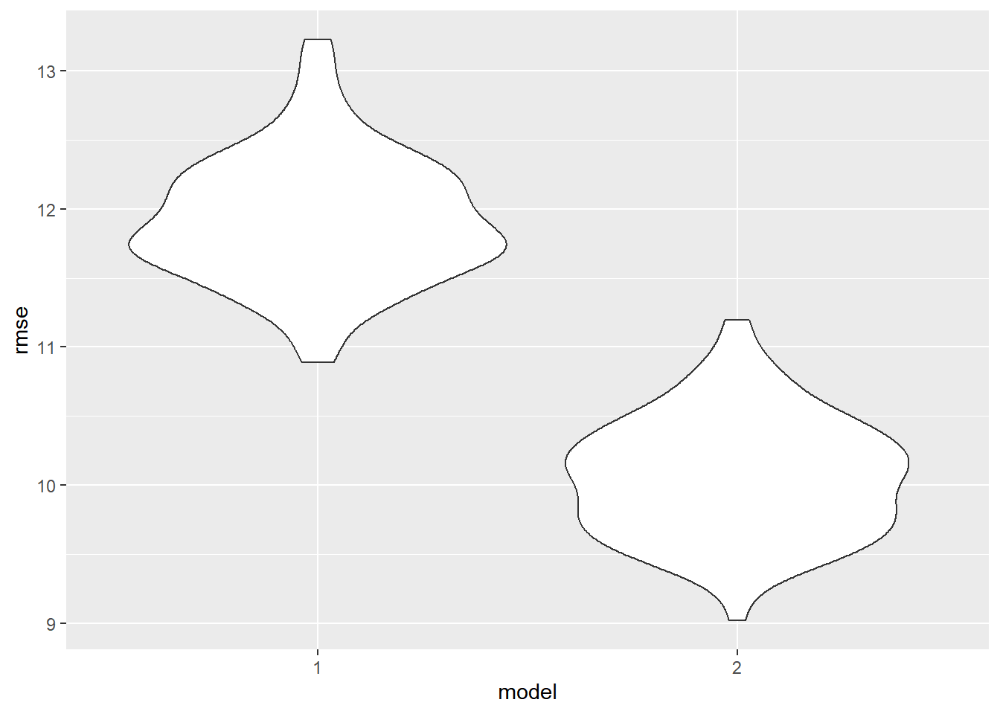

Museums teach, challenge, inspire, and connect communities. Cultural institutions such as museums hold our collective memory and create spaces for people to grapple with complex histories and understand how they shape today’s reality. Moreover, museums inspire engagement, debate, and reflection, providing intellectual stimulation. As museums lovers, we suspect that presence of museums in a city may influence life outcomes such as community-level educational attainment. However, we understand that income level may be a common cause of amount of museums in an area and educational achievement. Thus, we decided to investigate the relationship between museums and educational achievement with income as a possible confounder.
We located a “Museums, Aquariums, and Zoos” dataset from the Institue of Museum and Library Services (IMLS) through Kaggle. The dataset was compiled from IMLS administrative records for discretionary grant recipients, Internal Revenue Service (IRS) records for tax-exempt organizations, and private foundation grant recipients. The scan and compilation of data sources was done in 2014.
For educational attainment and income data, we pulled from 2014 American Community Survey. We downloaded the S1501 | Educational Attainment dataset, which contains data of interest by zip code. The ACS is an annual survey that provides information about jobs, educational attainment, and more. The data tables that are released every year are accessible through census.gov.
Both datasets are .csv files, so they were both imported with
read_csv. Variable names were cleaned with
janitor::clean_names for both files as well. Unnecessary
variables such as phone_number were removed from the
museums dataset, and any museums that did not have an associated
zip_code were removed with drop_na.
The education (and income) dataset contained a large number of columns for each geographic area (zip code). The metadata file downloaded from data.census.gov was helpful in determining which columns were relevant to this analysis. To simplify the overall dataset, the variables that were ultimately selected were the total estimates of each educational attainment category – less than high school, high school diploma or equivalent, some college or associates degree, and bachelors degree or higher. These values are the estimated percentage of each zip code’s population. Additionally, the median income variable was selected, which is an estimate of the median earnings in the past 12 months (in 2014) for the population by zip code. The variables had very long names, so these were renamed for ease of use in analysis and readability. The data comes from a sample of adults 25 and older.
Finally, the two datasets were merged by zip code using
inner_join so that only zip codes represented in both
datasets were included. The final dataset contains information for 7907
museums, aquariums, or zoos in the United States.
Initially, we knew that we wanted to better understand the relationship between presence of museums and educational attainment. However, we were not yet sure how narrow our spatial unit would need to be to start to observe trends. In our exploratory data analysis, we examined educational attainment and median income by state and city.
This bar chart displays the number of each museum type across the United States, sorted by increasing mean income. Art museums have the highest mean income of all museum types (just under 70 million dollars per year), but are relatively uncommon. Natural history museums have the second highest mean income (just under 6 million dollars per year), but the lowest frequency of museums (n = 62). Historic preservation museums are represented the most (n = 3877), but have the least average income (~300,000 dollars per year).
New York state has far and away the most museums, zoos, and aquariums (n = 609). New York, California, Texas, Pennsylvania, Ohio, and Illinois are among the only states boasting over 300 of these institutions. Mississippi is the state with the lowest number of museums (n = 33). Washington, D.C. has many museums for its small size (n = 42); fitting for the capital city of the country.
The above scatterplot shows the number of museums in a city by the average median income of the population over 25 years. Only cities that have at least five museums are included. Notably, one team member is disappointed to see that their hometown has the highest income in this subset of cities to have only 5 museums. There does not appear to be much of a correlation between the two variables; we can see this with the large amount of variation in income for the cities with 5 museums. Notably, New York City has 68 museums and an average median annual income of $68.7K. Average median income is obtained by pooling and averaging the median income of all zip codes within the city.
This lack of correlation makes sense when we take into account the vast range of median income across neighborhoods within one city. For example, though New York City’s average median income is just under $70K, it is the top financial center of the world and home to many of the richest people alive. Thus, we can expect that city-level data may not reveal insights about income and museum count. Instead, we may obtain more conclusive findings when analyzing by zip code.
| city | n_museums | est_less_than_HS | est_HS_diploma | est_some_college | est_bachelors |
|---|---|---|---|---|---|
| BALTIMORE | 25 | 17.42 | 24.78 | 34.89 | 22.93 |
| CHICAGO | 36 | 9.09 | 17.83 | 40.49 | 32.60 |
| CLEVELAND | 22 | 15.34 | 28.25 | 43.42 | 12.99 |
| HOUSTON | 22 | 14.25 | 22.08 | 40.16 | 23.55 |
| LOS ANGELES | 38 | 10.71 | 20.14 | 41.40 | 27.74 |
| NEW YORK | 68 | 7.81 | 16.52 | 35.73 | 39.93 |
| PHILADELPHIA | 34 | 9.01 | 21.96 | 41.35 | 27.68 |
| PORTLAND | 27 | 11.23 | 24.44 | 44.34 | 19.99 |
| RICHMOND | 22 | 12.76 | 27.32 | 45.56 | 14.34 |
| SAN FRANCISCO | 29 | 8.12 | 15.15 | 40.98 | 35.75 |
| SPRINGFIELD | 32 | 16.29 | 26.70 | 48.55 | 8.49 |
| WASHINGTON | 54 | 10.96 | 17.05 | 37.87 | 34.13 |
The above table shows the top 10 cities in the U.S. with the most museums, aquariums, or zoos, along with educational attainment estimates. Educational attainment categories are: less than high school, high school diploma or equivalent, some college or associates, and bachelors degree and above. The values are the estimated percentage of the population within each category, calculated by taking the mean estimated percentage across zip codes within the city. Among these 10 cities, New York City has the highest percentage of individuals with a bachelors degree and above (39.93%), while Springfield, IL has the lowest (8.49%). Baltimore, MD has the highest percentage of individuals who do not hold a high school diploma (17.42%).
These spatial units, while interesting for certain observations, did not appear to show strong relationships with museum presence. This made sense when we took into account the vast range of median income across neighborhoods within one city. We will not be able to understand the true relationship between museum count and education unless we zoom in our unit of analysis. We confirmed our suspicion that city-level data will not reveal insights about income and museum count, and that we should use zip code as our unit of analysis in the linear regression.
In this data analysis, we assess the relationship between the number of museums in a zip code and high educational attainment, as well as median income, through linear regression models. We use estimated percentage of individuals with a bachelor’s degree in a zip code as a proxy for high educational attainment.
First, the analysis investigates whether the number of people with bachelors degrees is significantly related to the number of museums in their zip code.
# Count the number of museums per zip code
museum_count_per_zip <- museum_edu_df |>
group_by(zip_code) |>
summarize(n_museums = n())
# Merge the museum count back into the main dataset
museum_edu_df <- left_join(museum_edu_df, museum_count_per_zip, by = c("zip_code"), suffix = c(".museum_count_per_zip", ".museum_edu_df"))
# Linear regression: Number of Museums vs Highest Educational Attainment Category
regression_model_bach <- lm(bachelors ~ n_museums, data = museum_edu_df)
# Creating Regression Model Table
regression_model_bach |>
broom::tidy() |>
select(term, estimate, p.value) |>
knitr::kable(digits=10)| term | estimate | p.value |
|---|---|---|
| (Intercept) | 10.395863 | 0.000e+00 |
| n_museums | 0.171376 | 1.811e-07 |
E(bachelors) = β0 + β1(museum_n)
Intercept (Estimated Constant): 10.39586. This is the estimated percentage of individuals with a bachelor’s degree when the number of museums (n_museums) is zero. However, in practical terms, this value might not have a meaningful interpretation because it’s unlikely for the number of museums to be zero in a given city.
Coefficient for n_museums: The coefficient for n_museums is 0.17138. This represents the estimated change in the percentage of individuals with a bachelor’s degree for each additional museum. The positive sign indicates a positive relationship, suggesting that, on average, as the number of museums increases, the percentage of individuals with a bachelor’s degree also tends to increase.
Statistical Significance: The associated p-value is very small (1.81e-07). This indicates that the number of museums is statistically significant in predicting the percentage of individuals with a bachelor’s degree.
The linear regression model indicates a statistically significant, positive relationship between the number of museums and the percentage of individuals with a bachelor’s degree. The coefficient for the number of museums suggests that, on average, as the number of museums increases, the percentage of individuals with a bachelor’s degree tends to increase, which aligns with our original hypothesis.
Next, the analysis explores the relationship between median income and the number of museums in a zip code. A confounder must be associated with both the predictor and the outcome. Thus, this regression assesses the association between the predictor and potential confounder.
#Linear regression model: museums and median income
regression_model_income <- lm(n_museums ~ median_income, data = museum_edu_df)
# Creating Regression Model Table
regression_model_income |>
broom::tidy() |>
select(term, estimate, p.value) |>
knitr::kable(digits=10)| term | estimate | p.value |
|---|---|---|
| (Intercept) | 2.537878269 | 0.00000e+00 |
| median_income | -0.000014379 | 2.73268e-05 |
E(n_museums) = β0 + β1(median_income)
Intercept (Estimated Constant):
The intercept is 2.538. This is the predicted number of museums when the median income is zero.
Coefficient for median_income: The coefficient for median_income is -0.000014379. This represents the estimated change in number of museums for each unit change in income. The negative sign indicates a negative relationship, suggesting that, on average, as the number of median income increases, the number of museums tends to decrease.
Statistical Significance: The associated p-value is very small (2.73e-05). This indicates that the number of museums is statistically significant in predicting median income.
The linear regression model reveals a statistically significant, negative relationship between the number of museums and median income. The negative coefficient for the number of museums suggests that, on average, median income tends to decrease as the number of museums increases, which was unexpected, but should be further investigated.
The second criterion for median income to be a confounder is its association with the outcome: high educational attainment. We ran another linear regression with only bachelors and median_income variables.
#Linear regression model: college degrees and median income
regression_model_bachincome <- lm(bachelors ~ median_income, data = museum_edu_df)
# Creating Regression Model Table
regression_model_bachincome |>
broom::tidy() |>
select(term, estimate, p.value) |>
knitr::kable(digits=10)| term | estimate | p.value |
|---|---|---|
| (Intercept) | -6.7252860310 | 0 |
| median_income | 0.0004709779 | 0 |
The linear regression demonstrated a statistically significant, positive relationship. Since median income is associated with both our predictor and outcome, it should be further investigated if as a confounder.
A multiple linear regression model is employed to investigate whether median income is a confounding factor in the relationship between educational attainment and the number of museums.
#linear regression model testing for confounding
model3 = lm(formula = bachelors ~ median_income + n_museums, data = museum_edu_df)
# Creating Regression Model Table
model3 |>
broom::tidy() |>
select(term, estimate, p.value) |>
knitr::kable(digits=10)| term | estimate | p.value |
|---|---|---|
| (Intercept) | -7.3496990801 | 0 |
| median_income | 0.0004745601 | 0 |
| n_museums | 0.2448004363 | 0 |
E(bachelors) = β0 + β1(median_income) + β2(n_museums)
Coefficient for n_museums: 0.245. This represents the estimated change in the percentage of individuals with a bachelor’s degree for each additional museum, adjusted for median income. In the unadjusted model, the coefficient was: 0.17138. Given that there is a 30% difference between the crude and unadjusted models (>10%), there is sufficient evidence that median income does in fact confound the relationship between high educational attainment and amount of museums in a zipcode.
Furthermore, comparing models that include and exclude income reveals a difference in root mean squared errors (RMSE), indicating that the model that includes income is a better fit for our data:
cv1_df =
crossv_mc(museum_edu_df, 100)
cv1_df |>
mutate(
mod_1 = map(train, \(df) lm(bachelors ~ n_museums, data = museum_edu_df)),
mod_2 = map(train, \(df) lm(bachelors ~ median_income + n_museums, data = museum_edu_df))) |>
mutate(
rmse_1 = map2_dbl(mod_1, test, \(mod, df) rmse(model = mod, data = df)),
rmse_2 = map2_dbl(mod_2, test, \(mod, df) rmse(model = mod, data = df))) |>
select(starts_with("rmse")) |>
pivot_longer(
everything(), names_to="model", values_to="rmse", names_prefix="rmse_") |>
ggplot(aes(x=model, y=rmse)) + geom_violin()
Subsequently, another linear regression model was run with an interaction term, to see if there was interaction with income and museums number of bachelor’s degrees obtained.
#linear regression model testing for confounding
model_int = lm(formula = bachelors ~ median_income + n_museums + median_income*n_museums, data = museum_edu_df)
# Creating Regression Model Table
model_int |>
broom::tidy() |>
select(term, estimate, p.value) |>
knitr::kable(digits=10)| term | estimate | p.value |
|---|---|---|
| (Intercept) | -2.2849540454 | 6.528e-07 |
| median_income | 0.0002901590 | 0.000e+00 |
| n_museums | -2.3996940174 | 0.000e+00 |
| median_income:n_museums | 0.0000986444 | 0.000e+00 |
The significant interaction term in the model implies that the effect of n_museums on bachelors is not constant across all levels of median_income. In other words, the relationship between the number of museums (n_museums) and the likelihood of having a bachelor’s degree (bachelors) is influenced by the level of median_income. The model shows that the effect of the number of museums on educational attainment is not constant across all median income levels.
cv2_df =
crossv_mc(museum_edu_df, 100)
cv2_df |>
mutate(
mod_1 = map(train, \(df) lm(formula = bachelors ~ median_income + n_museums + median_income*n_museums, data = museum_edu_df)),
mod_2 = map(train, \(df) lm(formula = bachelors ~ median_income + n_museums, data = museum_edu_df))) |>
mutate(
rmse_1 = map2_dbl(mod_1, test, \(mod, df) rmse(model = mod, data = df)),
rmse_2 = map2_dbl(mod_2, test, \(mod, df) rmse(model = mod, data = df))) |>
select(starts_with("rmse")) |>
pivot_longer(
everything(), names_to="model", values_to="rmse", names_prefix="rmse_") |>
ggplot(aes(x=model, y=rmse)) + geom_violin()The comparison of models with and without interaction terms using cross-validation suggests that the model with interaction terms yields a slightly lower RMSE, indicating better predictive performance. Therefore, the model with interaction terms is considered the best, emphasizing the importance of considering the interplay between median income and the number of museums in predicting educational attainment.
We used four different linear regression models to answer two central questions: (1) whether amount of museums is associated with high educational attainment, and (2) whether median income confounds this relationship.
Ultimately, we found that median income explains some of the relationship between amount of museums in a zip code and high educational attainment. We also found that the relationship between amount of museums and educational attainment is not only affected by the presence, but also by the level of median income.
The museums, aquariums and zoos data set we chose to use is 9-10 years old. Thus, the relevance of our findings may be called into question. However, we do not suspect that there were any significant social, political, or otherwise circumstantial shifts that would have significantly changed relationship between number of museums, educational attainment, and median income by zip code.
During the data acquisition phase of our project, we encountered surprising difficulty in obtaining education level and median income by zip code. It was easier to obtain a publicly available data set at a city-wide, county-wide, or state-wide level. We understand that this is likely to protect private information. However, because zip code is so often used in epidemiology as a proxy for socioeconomic status, we were surprised that it was so difficult to come across on the web!
While there is significant evidence that median income confounds the association between number of museums and number of bachelors degree holders within a zip code, ultimately, we would be remiss to claim that there is a causality between museums and educational attainment. Given that the number of museums within a zip code is likely due to a multiplicity of factors, our causal model at this stage may not be a full model.
We recognize that there is an iterative relationship between income and number of museums. That is, areas with higher median incomes will have both the means and the motivation to want to fund museums in their area. On the other hand, areas with lower median income will not have the funds to Making these connections may be reason to advocate for more even distribution of federal funding of cultural institutions across zip codes to eliminate “museum deserts” in the future.